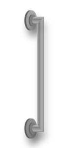

The NDIS has divided AT into four levels of complexity. Level 1 includes simpler items that are usually less expensive and do not require a formal application. Levels 2 – 4 involve items that require assessment forms to be completed by or with a suitably qualified AT Assessor.
Levels of technology and the NDIS
Select each of the headings below to learn more about the four levels of complexity.
Level 1 Technology
Level 1 AT are low-cost, low-risk products and services that people can readily identify, are locally sourced and can be easily integrated into a participant’s life for effective use.
Examples include: medication management devices, non-slip bathmats, talking watches, long-handled or adapted grip equipment, large print calendars and alert systems with flashing lights instead of doorbell sounds.
Level 2 Technology

Level 2 AT are local, low- to medium-cost products and services, and low- to medium-risk solutions that require only minor adjustments to activities and environments.
These AT products are typically available ‘off the shelf’ and may need either minor adjustments or some training.
Examples include: a shower chair, hand showers, grab rails and hand rails, personal alarms, chair raisers, slide sheets, swivel discs, footwear and some orthotics.
Level 3 Technology

Level 3 AT is similar to Level 2 AT but:
- they are addressing a more complex participant need
AND/OR
- it requires customisation, interconnection and/or integration with other AT or the person’s home, work or place of study
AND/OR
- there is a higher risk of injury if it is incorrectly set-up/issued, which may not be obvious to the operator.
Examples include: a refreshable electronic braille display, telescopes, hearing aids and accessories, non-portable ramps in the home, stair lifts, replacement taps, repositioning of power points, foot and body wedges, mobile or ceiling hoists and slings, power wheelchairs, specialised car seats, and non-complex prosthetics and orthotics.
Level 4 Technology

Level 4 AT may:
- be custom-made or ‘off the shelf’, but configured uniquely for the person
- require interconnection or integration with other AT or the person’s home, work or place of study
- carry significant risks leading to hospitalisation or death.
Examples include: power wheelchairs with integrated controls, bathing devices including shower commodes, high-level pressure cushions and pressure care sleep systems, complex myoelectric prosthetics and complex and high-risk orthotics.